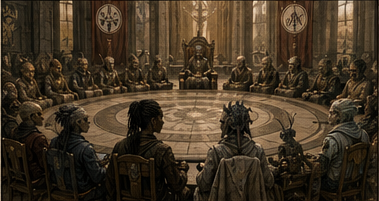

1. COLD OPEN — +200 YEARS (COUNCIL ERA)
- Phase
- Council Era
- Location
- Council chamber
- Interaction
- Required canon event; audience may inspect evidence but cannot alter outcome.
Accessibility description
Council representatives gather in a circular chamber to dispute leadership of Umada and Tisetan.